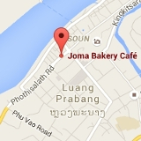

The village is nested between two rivers with countless natural pools, private beaches and the precious shade of a gigantic bamboo garden surrounded by a tropical teak forest.
Events
Information
The village has a herbal steam sauna next to a river beach, wood fire ovens and a spacious open Shala for group events.
The land is cultivated with an organic garden producing leafy greens and an orchard with saplings and mature fruit trees. Many species of bamboo have been planted to diversify the ecosystem and supply building materials for the environmentally friendly bungalows.
Food
We offer delicious Asian and international food using organic produce from the garden or other local farms where possible. The type of food varies for each event please contact your event organizer for more information.
Accommodation
Our beautiful traditional Laos houses and bungalows are on the river with private natural pools. Bungalows and huts have shared bathrooms and toilets. We provide bedding for everyone.
Getting There
 The village is located 15 minutes walk from the extraordinary Kuang Si waterfall national park, 29 kilometres from Luang Prabang, historical capital of Laos.
The village is located 15 minutes walk from the extraordinary Kuang Si waterfall national park, 29 kilometres from Luang Prabang, historical capital of Laos.
You can fly to Luang Prabang international airport. Air Asia often have cheap flights. On the day of the event the circus trucks will collect you from the meeting point at Joma bakery next to the post office in Luang Prabang.
Contact
Questions about a specific event should be sent to the event organizer. For other general enquiries email Arno L’Hermitte.